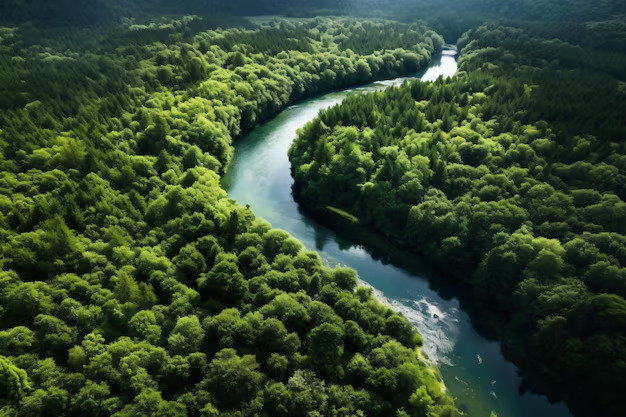
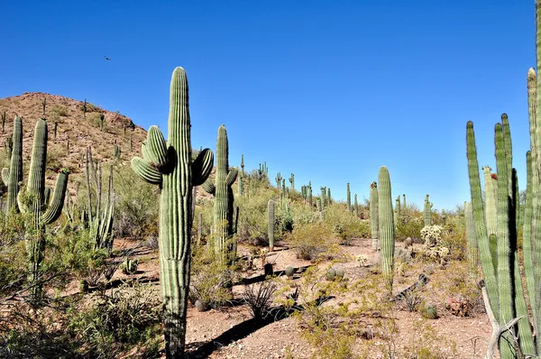
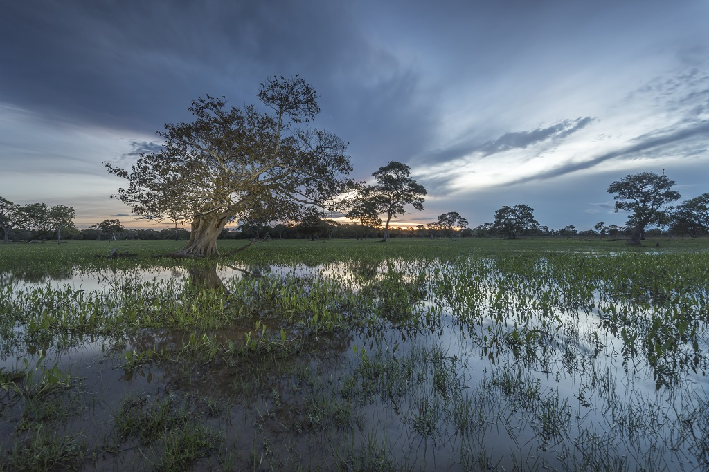
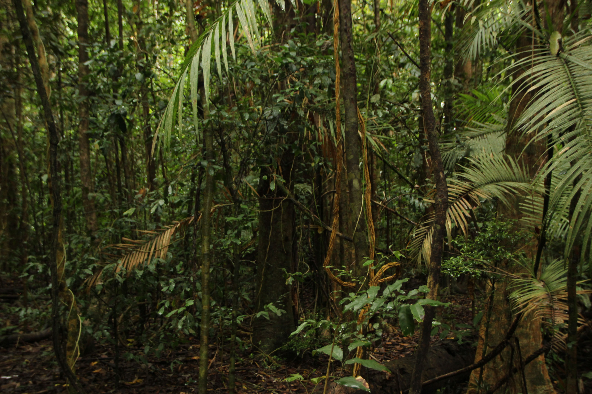
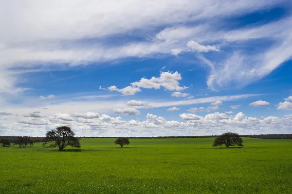
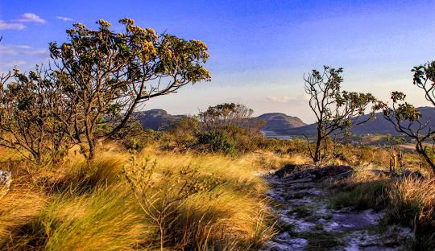

Biomas Brasileiros

Amazônia
Essencial para a regulação do clima e manutenção da biodiversidade.

Caatinga
Importante para a manutenção dos ciclos hídricos no semiárido.

Pantanal
Crucial para a vida selvagem e regulação dos recursos hídricos.

Mata Atlântica
Um dos biomas mais ricos em biodiversidade, apesar da sua fragmentação.

Pampa
Importante para a criação de pastagens e preservação de espécies locais.

Cerrado
Bioma de transição, rico em biodiversidade e adaptado ao clima seco.